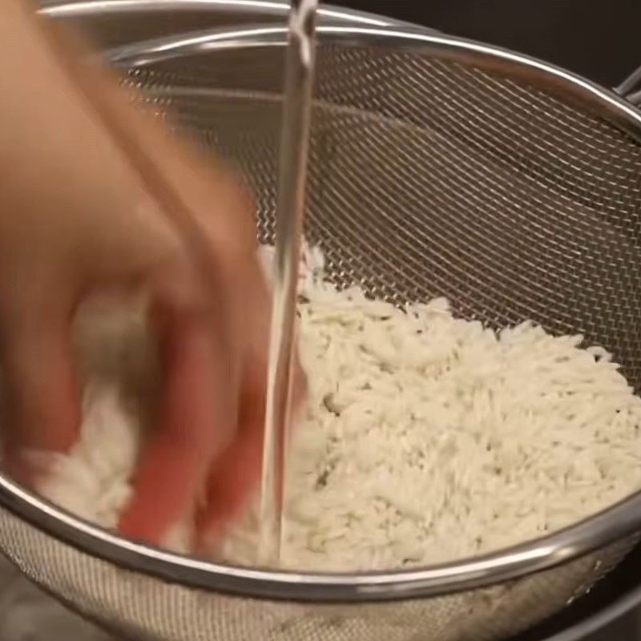
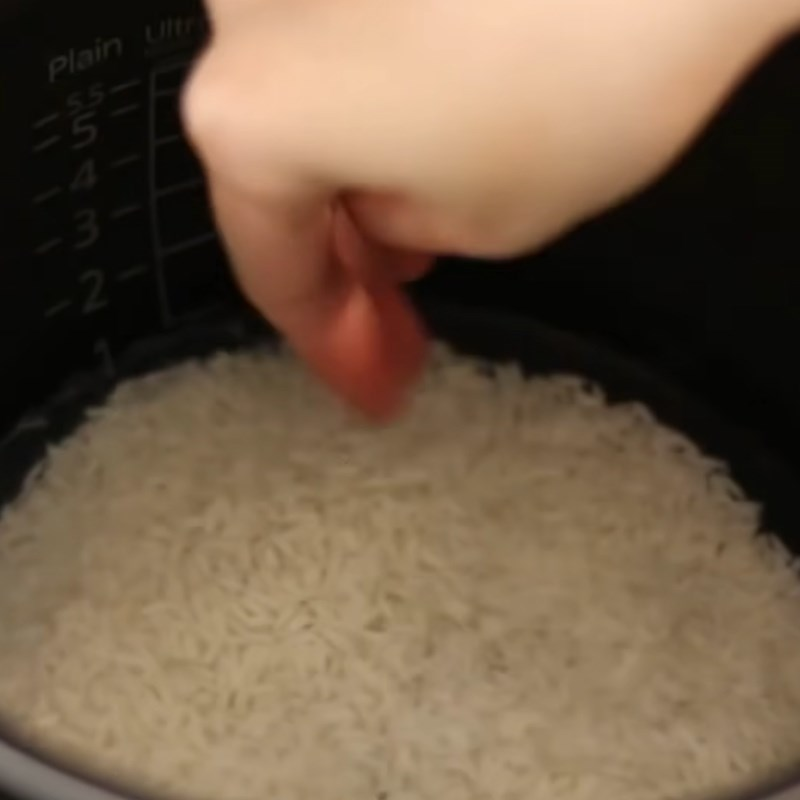
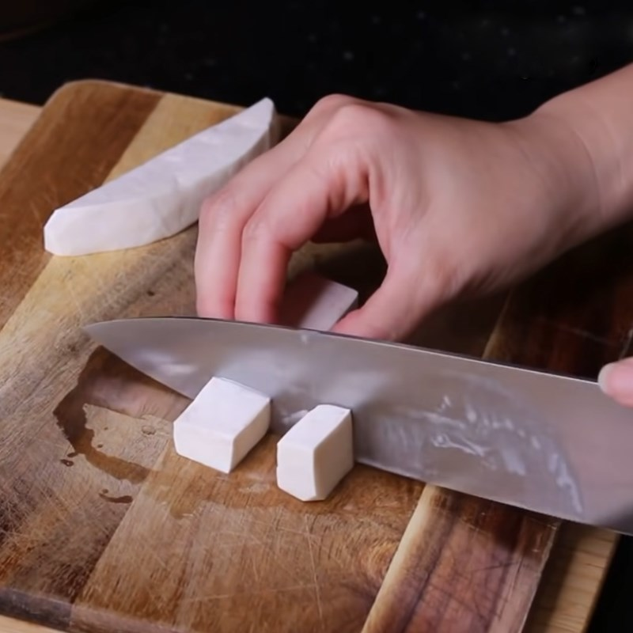
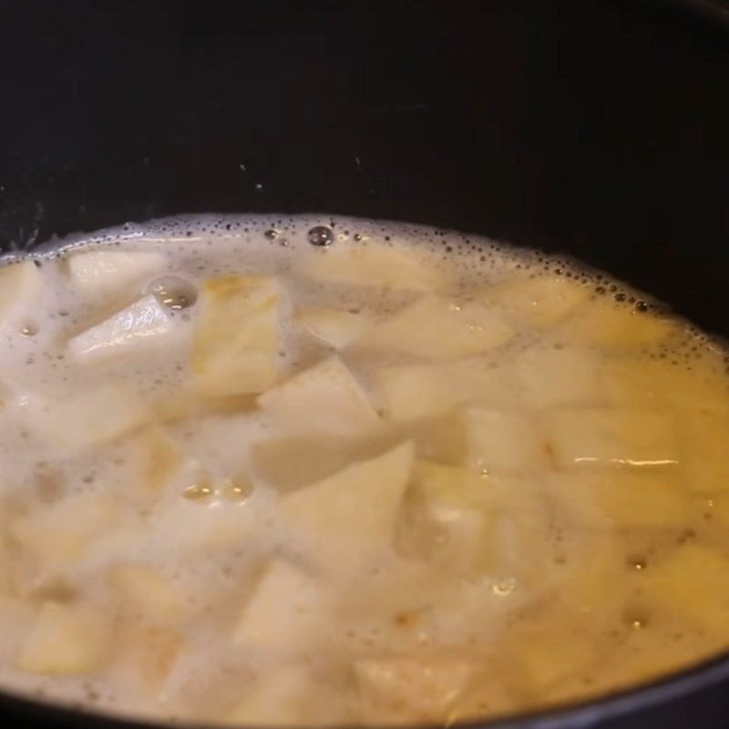
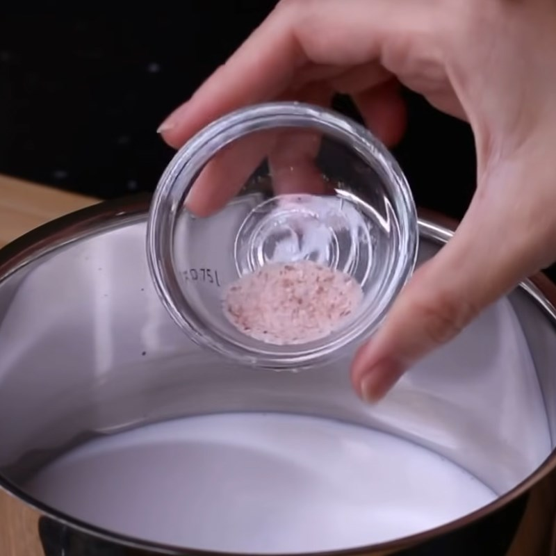
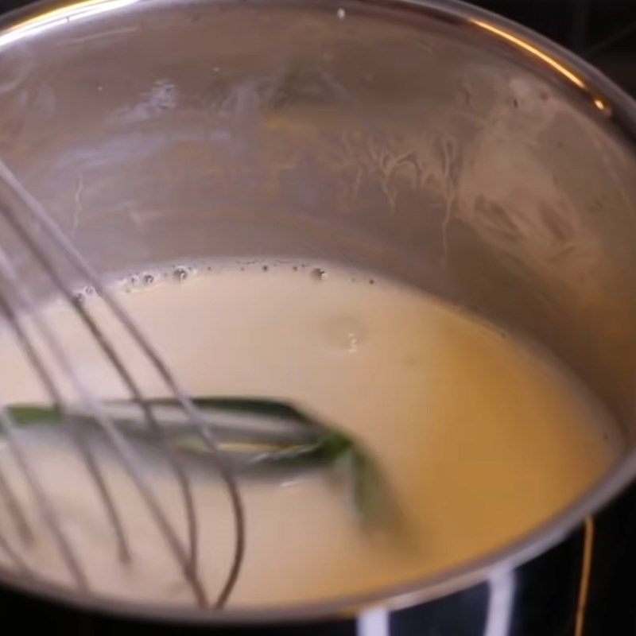
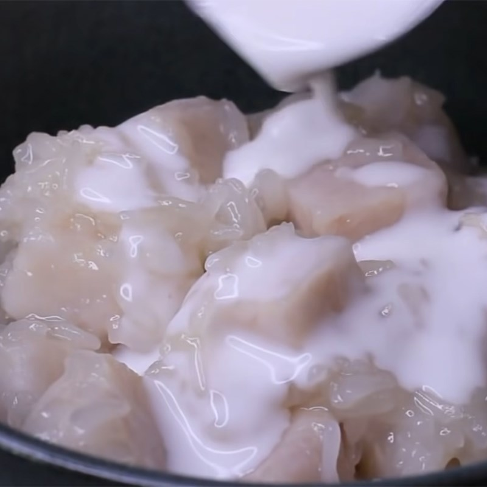

Chè khoai môn
-
Thành phần
- Khoai môm 400 Gram
- Nước cốt dừa 200 ml
- Nếp 150 Gram
- Tinh bột bắp 5 Gram
- Lá dứa 1 lá
- Tinh dầu vani 1 muỗng cafe
- Đường 200 Gram
Hướng dẫn thực hiện
Đầu tiên bạn vo nếp thật sạch, sau đó bạn để nếp cho thật ráo khoảng 5 phút.
Tiếp theo bạn cho vào nồi cơm điện, đổ thêm 200ml nước lọc, rồi nhấn nút nấu cơm
như bình thường, nếu nồi nhà bạn có chức năng nấu nếp thì chọn chế độ này nhé!

- 
- 

Khoai môn mua về bạn gọt bỏ vỏ rồi rửa sạch, sau đó bạn cắt khoai môn thành những
miếng vuông nhỏ vừa ăn.
Tiếp theo bạn cho khoai môn vào nồi cùng với 100gr đường cát, 300ml nước lọc,
sau đó bắc lên bếp rồi nấu ở lửa lớn cho đến khi nước sôi thì bạn hạ lửa vừa và
nấu thêm khoảng 7 - 10 phút.
Sau khi khoai mềm, dùng đũa xiên qua dễ dàng thì bạn dùng rây lọc vớt khoai ra
để nguội và giữ lại phần nước luộc khoai.
- 
- 


Đặt nồi lên bếp, sau đó bạn cho nước luộc khoai, 50gr đường, 1/4 muỗng cà phê
muối, 1 muỗng cà phê tinh chất vani vào rồi vừa nấu vừa khuấy trên lửa vừa cho
đến khi nước sôi và đường tan hết.
Sau khi nước sôi thì bạn hạ xuống mức lửa nhỏ vừa rồi bắt đầu cho nếp vào và đảo
nếp khoảng 1 - 2 phút, tiếp đó bạn cho khoai môn vào nồi rồi tiếp tục đảo đều
tay thêm 2 - 3 phút cho đến khi nước gần rút hết là được.


Bạn cho 200ml nước cốt dừa vào một nồi mới cùng với 15gr đường, 1/4 muỗng cà phê
muối, 1/2 muỗng canh tinh bột bắp rồi khuấy đều cho đường và tinh bột bắp tan
đều.
Sau đó bạn cho vào 1 cái lá dứa rồi đặt nồi nước cốt dừa lên bếp nấu với lửa vừa
cho hỗn hợp nước cốt dừa sôi lên, khi vừa sôi bạn khuấy thêm khoảng 10 giây rồi
tắt bếp.

- 

- 
Sau khi hoàn thành bạn sẽ có ngay 1 chén chè khoai môn nước cốt dừa với những hạt
nếp óng ánh cực hấp dẫn rồi.
Khi ăn bạn sẽ cảm nhận được nếp dẻo thơm cùng với khoai môn mềm bùi hòa quyện
cùng với sự béo của nước cốt dừa kết hợp tạo nên một món chè với vị ngon tuyệt
vời, không thể chối từ.
- 